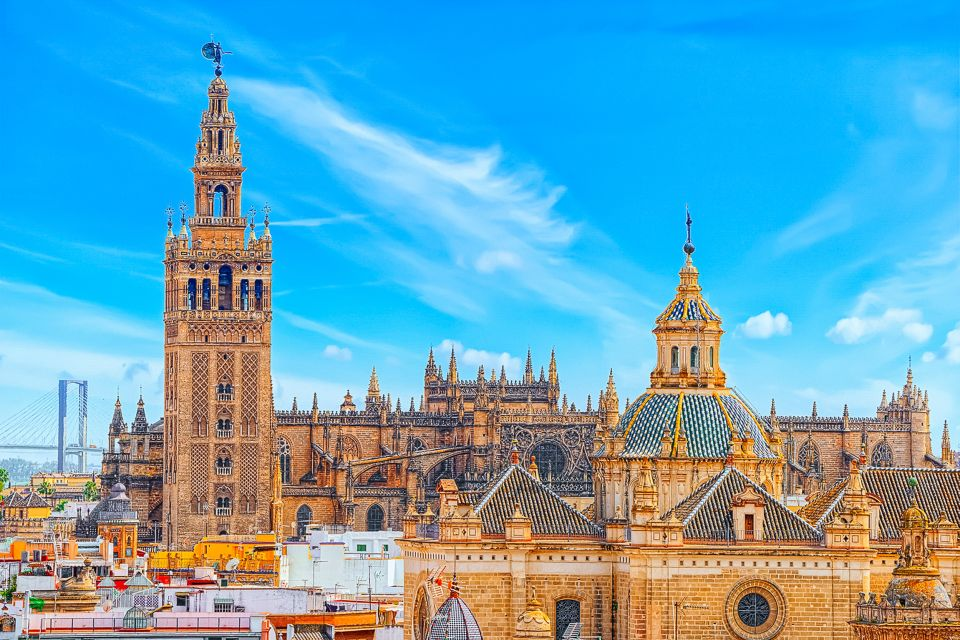

Why Sevilla?
Sevilla, the fourth largest city in Spain
Sevilla is a beautiful place located in the heart of Andalusia. This city is truly unique and has a rich history and culture. The history of Sevilla goes back thousands of years. Sevilla has a rich cultural heritage that reflects their stunning architecture, monuments, and museums.To enjoy the history and heritage to its fullest you should explore the iconic Alcázar Palace. This landmark place in Sevilla traces its origins back to the Moorish era. Another great thing to do in Sevilla is explore the Cathedral of Sevilla. This cathedral is the largest Gothic cathedral in the world, making it special.